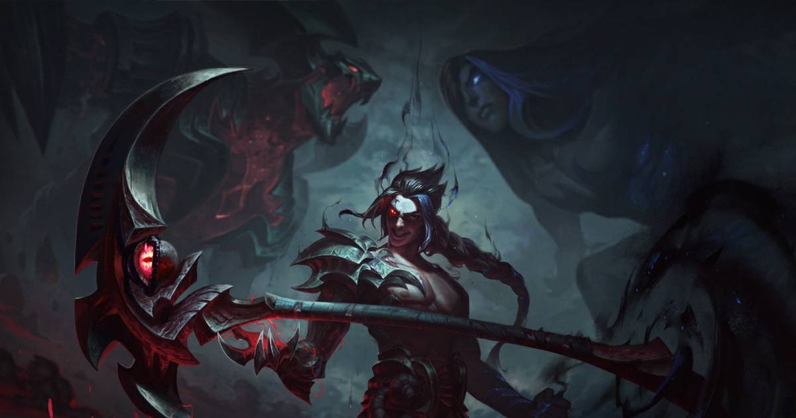
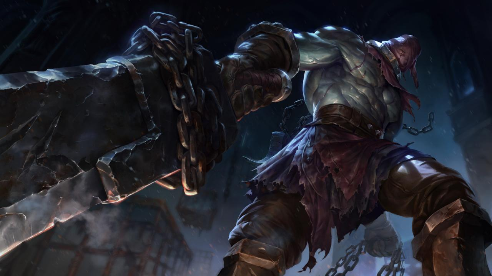

This is Kayn
Kayn is a master asassin. He can go through walls at fast speeds and also has two forms. Darkin is his red form and Asassin is his blue form. Below is an example of Kayn doing his job.

This is Tryndemare
Tryndamere is a pure fighter. All this champion is good for is fighting. his damage relies in his ablilty to hit critical strikes more often than any other champion.Below is an example of his critical strike, this is just INSANE.